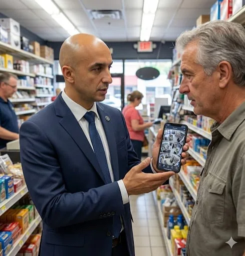
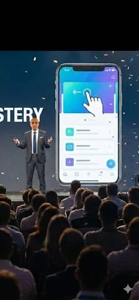
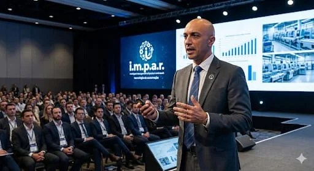

Missão
Transformar necessidades reais em soluções digitais inteligentes, acessíveis e úteis.
Desenvolvemos aplicativos, softwares e experiências digitais que simplificam tarefas, promovem aprendizagem e aproximam a tecnologia das pessoas.
A ÍMPAR TECHNOLOGY é uma iniciativa brasileira de tecnologia, fundada por Giovani Marcelo Barbare Junior, em Petrópolis (RJ), dedicada ao planejamento e desenvolvimento de produtos digitais que atendam a necessidades concretas.
Unimos desenvolvimento de software, criatividade, experiência em administração e gestão eficiente de recursos para transformar problemas em experiências intuitivas, úteis e economicamente sustentáveis.

Transformar necessidades reais em soluções digitais inteligentes, acessíveis e úteis.
Construir um portfólio de produtos digitais relevantes, confiáveis e sustentáveis.
Utilidade, simplicidade, criatividade, responsabilidade, acessibilidade e qualidade verificável.
Atuação orientada ao problema, com ferramentas e abordagens adequadas a cada projeto.
Experiências mobile, ferramentas práticas, diagnósticos assistidos e interfaces intuitivas.
Aplicações responsivas, painéis, experiências PWA e sistemas integrados a dados.
Plataformas de estudo, aulas estruturadas, exercícios e acompanhamento da aprendizagem.
Experiências de e-commerce, organização de catálogos e fluxos digitais comerciais.
Protótipos de entretenimento mobile, mecânicas de interação e estudos de desempenho.
Orientação tecnológica, análise de necessidades e otimização de processos de negócios.
Prototipagem, IA como apoio ao desenvolvimento e aprimoramento responsável de processos.
Iniciativas em diferentes fases de desenvolvimento e validação. Apresentamos o estágio de cada uma com transparência.
Aplicativo Android com foco inicial em aparelhos Samsung, desenvolvido para ajudar o usuário a compreender seu dispositivo e realizar ações conscientes de manutenção.
Explora informações de bateria, armazenamento e uso de recursos, com orientações que respeitam as permissões e os limites do Android.
Plataforma educacional planejada para reforço escolar dos anos finais do Ensino Fundamental, Ensino Médio e preparação para o ENEM.
Conteúdos estruturados, exercícios, recursos multimídia e arquitetura pensada para apoiar a aprendizagem e futura análise do progresso.
Jogo de combate aéreo para celular, com foco em controles acessíveis por toque e jogabilidade com uma mão.
Campo de experimentação em mecânicas de ação, interfaces interativas, lógica de jogo e análise de desempenho gráfico.
Projeto comercial especializado em produtos e soluções para costura, com desenvolvimento de experiência digital em Shopify.
Trabalho técnico com temas, navegação responsiva, organização de catálogo e separação entre curadoria e liberação de produtos para venda.
As pranchas do Educa Brasil mostram a identidade anterior, Aprende Brasil. A vitrine da Costura Pra Mim é um estudo visual.
Desenvolvimento progressivo, decisões conscientes e foco em resultados que podem ser verificados.

Identificar problemas, usuários e objetivos.
Traduzir necessidades em requisitos e prioridades.
Construir versões utilizáveis para avaliação.
Testar, documentar e corrigir o que for necessário.
Melhorar com responsabilidade e controle de recursos.
Não escolhemos uma tecnologia porque está na moda. Nossa direção é selecionar ferramentas adequadas ao problema e à maturidade do produto.
A ÍMPAR TECHNOLOGY é liderada por Giovani Marcelo Barbare Junior, com formação em Administração e experiência em comércio varejista, consultoria de tecnologia, criação de produtos digitais e desenvolvimento de soluções práticas.
A proposta reúne compreensão de custos e processos, perspectiva comercial e experimentação técnica para levar ideias além do conceito.
Para conexões profissionais, oportunidades de colaboração e conversas sobre tecnologia e desenvolvimento.

WhatsApp: (24) 98135-4971
Endereço informado: Travessa Vereador Prudente Aguiar, nº 27, Centro, Petrópolis — RJ.
Conversar pelo WhatsApp ↗Ver endereço no mapa ↗Atendimento presencial sujeito a confirmação pelo WhatsApp. Não há formulário de coleta de dados neste site.